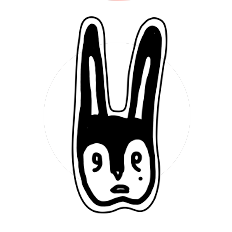

Quiénes somos?

Crota nació del vacío, de no saber qué hacer con tanto lío. Surgió instantáneo como si hubiera estado esperando en un año de caos, de crisis, amores, indecisiones. Salió para concretar lo que dejaba de lado, medio escondido pero acompañado y siempre con una botella en la mano.

Cata acompaña, le da una mano a Crota cuando la llama. Cata deambula y se pregunta, no está segura de nada, días que pasan, pesan. Arrancó los dibujos en un año confuso, lleno de indecisión y sentimientos nuevos. Un año de mucho vino, birra y relaciones. Un año en loop de análisis y teorías.